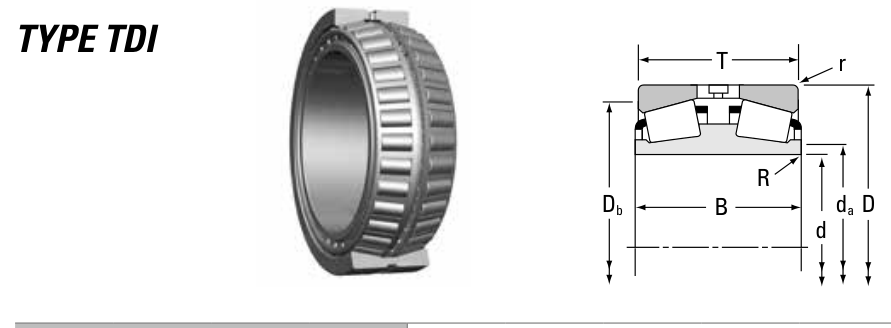

Original catalogue drawing - Timken TRB Catalog, page 612

Scanned from the manufacturer catalogue page listing this part number. All part numbers printed on that table share the same drawing.
Scale cross-section
Blue = inner / outer ring, yellow = rolling element. Drawn to scale from this part's own
dimensions for selection reference only - not a manufacturing or assembly drawing.
Dimension table (mm / inch)
Symbol
Dimension
mm
inch
d
Bore diameter
64.987
2.5585
D
Outside diameter
140.03
5.513
B
Inner-ring / bearing width
65.989
2.598
T
Overall assembly width
66.091
2.602
r
Chamfer (min)
2.3
0.0906
Notes
Tapered roller bearings are cone / cup assemblies; cone and cup weights are listed separately and the total is their sum. Weights are given in kg. Load ratings are shown in both the original catalogue units and the converted value (1 N = 0.2248 lbf). Data is provided for selection reference only - confirm against the latest official catalogue before ordering.
Main dimensions
Bore d (mm)
64.987
Bore d (in)
2.5586
Outside dia. D (mm)
140.030
Outside dia. D (in)
5.5130
Width B (mm)
65.989
Width B (in)
2.5980
Overall width T (mm)
66.091
Overall width T (in)
2.6020
Load ratings & speeds
Basic dynamic load rating Cr (lbs)
66900
Basic dynamic load rating Cr (N)
298000
Dynamic rating C1 (N, ISO)
298000
Dynamic rating C1 (lbf, ISO)
66900
Radial rating C90 (N)
44300
Radial rating C90 (lbf)
9970
Thrust rating Ca90 (N)
65700
Thrust rating Ca90 (lbf)
14800
Factor e
0.9
Factor Y1
0.8
Factor Y2
1.2
Factor K
0.67
Geometry factor G1
62.6
Geometry factor G2
19.1
Geometry factor Cg
0.0884
Weight
Weight (kg)
4.91
Mounting dimensions (fillets / shoulders)
Shaft fillet R max (mm)
1.5
Housing fillet r max (mm)
2.3
Shaft shoulder da (mm)
79.0
Housing shoulder Db (mm)
117.0
Bearing life (ISO 281 basic rating life)
C / P
Equivalent load P (N)
L10 (106 rev)
L10h at 500 rpm
4
74,500
102
3,386
6
49,667
392
13,083
8
37,250
1,024
34,133
10
29,800
2,154
71,814
15
19,867
8,323
277,449
Basic rating life per ISO 281: L10 = (C/P)10/3 with C = 298,000 N. Hours = L10 x 106 / (60n). Life-modification factors for lubrication, contamination and temperature (aISO) are not included.
Source & traceability
Brand
Timken
Source catalogue
Timken Tapered Roller Bearing Catalog (2016)
Catalogue page
p.612 (dimensions)
Series type
TDI
ISO dynamic rating C1, Timken C90 / Ca90, static rating C0, geometry factors and assembly weight.
Send us the quantity you need and we will come back with price and
lead time, normally within 24 hours. Equivalent parts from other brands can be quoted at the same time.